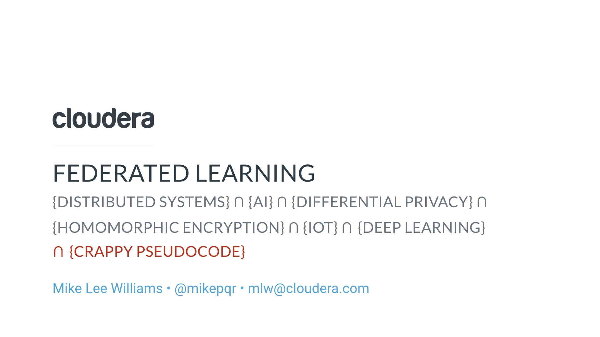
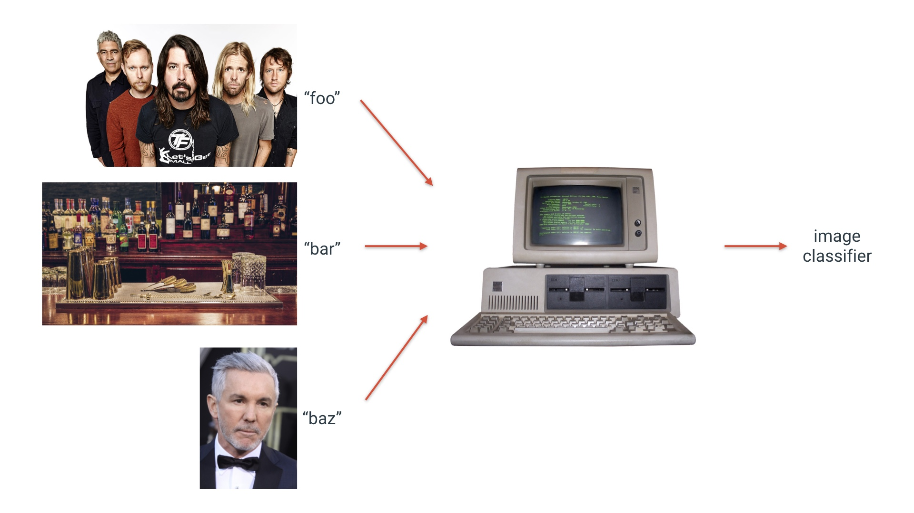
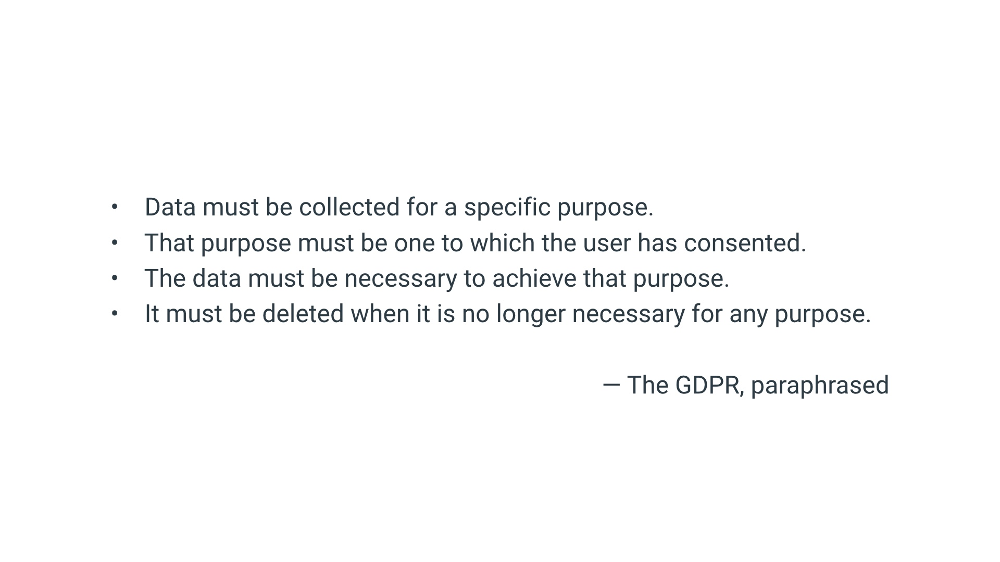

|
This talk is about an approach to distributed machine learning that gets around two concerns you might have when you move training data: you’re compromising privacy and you’re creating practical engineering problems. I’ve become pretty down on machine learning and its implications for privacy and discrimination recently, but federated learning makes me much more optimistic about it, so I think it’s pretty cool. We probably won’t have time for questions, but please ping me on slack, twitter or email if you’d like to talk more! # |
| If you imagine a venn diagram with distributed systems, ‚ÄúAI‚Äù (üôÑ), differential privacy, homomorphic encryption, IoT and deep learning then federated learning is in the middle. # | |
|  |
If you add crappy pseudocode to that venn diagram you now have the set that contains this talk. I’m only half joking. We really are going to touch on all those topics. But you don’t need a background in any of these areas. I’m certainly not an expert in all of them. This is going to be a pretty high level talk with the goal of getting you excited. # |
| With that said, you do need to know what machine learning is. Here’s the most concise description I’ve seen for a programming audience. ML is a set of algorithms that infers the rules that connect data to answers, given examples of data and the right answers. # | |
|  |
So for example, suppose I want to build a classifier that can tell the difference between foo and bar. To do that, I need example images of foo, correctly labeled. And I need example images of bar. If I’m feeling ambitious I might even add a third class. Then machine learning occurs, and I have my classifier. How it does this is mostly beside the point for this talk. If the training data starts life on multiple machines. The natural thing to do is to consolidate that data in one place. But if you do that you’ve actually created a couple of new problems. # |
|
The first problem is privacy. Any time you move training data around you create privacy concerns. I might not be comfortable sharing my pictures of Dave Grohl with you. I might not want you to know I have them. Or you might be a rival Dave Grohl picture collector. # |
|
|
More generally, many of us feel uncomfortable about sharing our data with tech companies. If you have a kid, you might feel uncomfortable about putting their image online, even in a private setting, if it’s going to be ingested into a ML algorithm. If I’m a tech company that wants to build a feature in my product that spots the best baby photos and proactively share them with people, I may not get many takers, even if I claim to be not evil. # |
|
| Or suppose I’m a non-evil tech company that wants to improve URL completion suggestions with machine learning. The training data for that is user browser history. I think most of us would be uncomfortable with sharing that. # | |
| If you use any kind of device that takes intermittent measurements of your body (a glucose sensor, a smartwatch, whatever) then you probably feel similarly. # | |
| And if you’re a custodian of medical data, you might want to pool that data with other custodians to cure cancer faster, or whatever. You’re not personally concerned about privacy. But you can’t because of HIPAA. # | |
|  | If you have users in the biggest regulatory environment in the world: the EU then the GDPR obliges you to minimize the extent to which you retain data. # |
|
Even if you don’t care about your own data, and you don’t work in a regulated industry like healthcare, and you don’t have data that belongs to people who live in the EU, then you should still care. Data is a burden. It costs money to store. Doing so incurs risks. Whenever you can avoid it, you should! (Along this line, I highly recommend this talk!) So our users don’t want to share their data, and we can’t or would rather not have it for various reasons. This would seem to be in tension with our goal of solving important and valuable problems with machine learning! # |
|
| In addition to increasingly salient concerns about privacy, there are practical trends relating to hardware that affect our ability to do the naive thing and move all the training data to our datacenter. # | |
| One of those trends is that training data is increasingly likely to start its life on a device with a cellular connection. Bandwidth is relatively expensive on those devices. And in some situations the data might even be too big to move over a cellular connection. # | |
|
And the use of that bandwidth consumes a disproportionate amount of power. (See https://petewarden.com/2018/06/11/why-the-future-of-machine-learning-is-tiny/) # |
|

|
That’s the bad news about the move to “the edge”. The good news is edge devices require less capital and climate control. And even better: they increasingly have specialized hardware for machine learning! # |
| So we’re now ready to specify the problem. This is the federated learning setting. # | |
| We want to train machine learning models using data that is partitioned across several nodes, but for a variety of reasons (privacy, practicalities), we can’t simply consolidate all that data on one machine and train in the usual way. Now what? # | |
| There are lots of federated learning algorithms. I’m going to describe one, “federated averaging”, which has the main virtue of being relatively simple. A lot of the other algorithms are variations on this theme. This algorithm was published in a paper from a Google team in 2016. # | |

|
By the standards of distributed systems, it’s extremely simple to the extent that it’s kind of surprising that it works. It’s so simple that an extremely similar algorithm appears in Jeff Dean’s undergraduate thesis, which was published in 1990. But credit to the 2016 paper: they empirically investigate the extent to which it works, and they spend time explaining why you might care to use it in a modern context. # |
| I’ll explain the algorithm first with diagrams and then with pseudocode. This is how the world starts. There are some nodes and a server. The server has on it a machine learning model that is untrained. A model is specified by numerical parameters. These parameters are uninitialized or random. But a model also has an architecture or type. (e.g. a linear model, which is what is pictured in this example, or a particular NN architecture, or an SVM or a whatever). # | |
| So the first thing the server does is send a copy of the model to the nodes. # | |
| This copy implies two instructions to the node: 1) we’re training models of this type 2) you should train it with your data. # | |
| So the nodes acquire or load some training data. Each node has different training data. # | |

|
Then each node incrementally trains the model. What that usually means is: each node does some gradient descent. In gradient descent, you’re searching for the lowest point on a surface that measures how bad your model is. You can’t see the whole surface. You try to get to that least-bad place taking short steps that go most steeply downhill. And you repeat until it’s uphill in every direction. In this case, we don’t need to reach the bottom of the hill. We just need each node to incrementally train the model so it’s better than the model it received from the server. # |
| Now each node sends a copy of their model back to the server. # | |
| What happens next is in the name of the algorithm. The server has four models and it takes the average. And that average model encapsulates information that was present on every node. # | |
|
That was a round of federated learning. And then we repeat, i.e. the newly improved model is sent back to the nodes, and they train some more, and send further improved models back. Crucially! No training data left each node. That means we’ve preserved their privacy. And we used up significantly less of their bandwidth and power because a model is fewer bytes than the training data. And we didn’t have to do any expensive computation on our server. # |
|
| Here’s the same thing in code. This is a round of federated learning. # | |
| The details of fedavg depend on the type of model. Here’s an example for a pytorch neural network (which stores the parameters in a dictionary you can access using the state_dict method). # | |
|
And here’s the loss curve over a few rounds. Remember I said gradient descent is exploring a surface who’s height measures how bad your model is. This is not that surface. Rather it’s a log of how high you are as a function of time. The green line is the one we care about. We’re getting better without moving training data! The grey lines are the model on each node. They get better (or worse) during a round because they’re learning the peculiarities of a small set of data, which may or may not generalize to the test set. The orange line is a non-participant. That node trains just as often as the others, but refuses to communicate with the server. It gets better, but not as much. That’s because it’s effectively a model trained on much less data. # |
|
| If you’re reading the presenter notes, at this point I’d recommend you visit https://turbofan.fastforwardlabs.com/ and play it. It will take you about 5 minutes to complete. I’ll demo it in the live talk. # | |

|
This figure, which I showed earlier, is the training run for the federated model in the Turbofan demo. I simulated federated learning by randomly distributing the training data across the nodes. # |

|
But that’s kind of unrealistic. Take the family photo example: I have a set of photos that includes people I know, taken mostly where I live. Your photos are different. The distribution of labels of our respective photos are very different. Does that screw things up? Let’s see. Suppose instead of photos of humans and places we’re dealing with MNIST, the dataset of hand-written digits. There are 10 classes in this dataset. # |
|
The distribution of labels for MNIST looks like this. 10% from each class. We can train a non-federated model with it. If the data is spread across ten nodes and we’re constrained by privacy and practicalities from consolidating it, then the labels might look this: each node has a distribution of labels that matches that of the whole dataset. This is uniform sampling. But if I really like writing 0 to the extent that 90% of the time I write a 0 and the rest of the time I write one of the other digits my dataset will look like this. And maybe you’re the same but you’re into 1. Each of us has really bad training data! You can see the appeal of working together. And what about the extreme: I only write 0. You only write 1. And so on. Will federated learning work in these situations? # |
|
|
The answer is yes! It reaches perfect accuracy more slowly, but federated training using nodes that have uniform (10%) data works fine. Highly biased (90%) nodes also work fine! And craziest of all, nodes which only have data from one class each reach decent accuracy too. Granted, not great accuracy. But way better than chance (and still improving when I stopped this run). # |
|
| This is wild to me. But having told you how great it is, I want to enumerate some of the challenges or what might more charitably be called “areas of active research”. # | |
|
One is: if you ask me why federated averaging works (why does it converge on a solution?), I can’t tell you in the general case. You can prove it will work for linear models and a couple of other special cases. But anything more complicated than that and it’s trial and error (or alchemy). This is a problem. I can only show it’s working by also training the non-federated way and demonstrating that it gets almost the same performance. If I can’t do that then I don’t actually know if it’s working well. But the whole point of federated learning is that you can’t train in the non-federated way! I should note that, while this probably seems bad if you’re from a CS background, this is not an unusual problem in machine learning and we’ve developed a strong stomach for it (and made progress despite it!). For more on that, the other talk I want to recommend is Rahimi and Recht’s 2017 NeurIPS address: https://www.youtube.com/watch?v=ORHFOnaEzPc. # |
|

|
Another problem is consumption. I sold federated learning as something that saved bandwidth and power. Federated learning may use less of these resources than uploading all the data. But it’s still a pretty demanding workload for a phone. Variations on the theme of federated averaging may allow us to reduce that demand further. For example, there’s a nice paper that changes the algorithm to have the nodes only communicate an updated model when it reaches a threshold in difference from the original model. # |
|
Then there are all the hard problems that are endemic in distributed systems. We’re operating as scale (it’s usually more than 4 or 10 nodes!) and Murphy’s Law is a thing. Together these mean that any failure mode will happen somewhere in your system. You need to be robust against all of them. Vanilla federated averaging is not robust! For example, the round will not complete until the slowest node in the network finishes. If you have a straggler then that is bad! And if you have a dropped connection you are in real trouble. That combination of scale and Murphy’s law has a name in phyics, by the way: https://en.wikipedia.org/wiki/Totalitarian_principle. # |
|
| Then there’s privacy. It boils down to the following observation: it is not in general impossible to infer attributes of the training data from a trained machine learning model. Training is basically lossy compression, so this should not be surprising. It’s a hard problem, but federated models suddenly make machine learning a more attractive target for attackers and security research. # | |
| Here’s an example of an attack from a 2017 paper. The face on the left is in the original dataset. The one on the right is reconstructed by another node in the network. Not perfect, but good enough to cause trouble! # | |
|
The mitigations for this attack include encrypting the model updates in such a way that the server can still perform the algebraic operations necessary to combine them, but they don’t need to travel in plain text. This is homomorphic encryption. It’s ruinously expensive in a computational sense, but that burden falls mainly on the server, so it’s promising. The other mitigation is differential privacy. Usually we think of that as something we apply to the raw data. E.g. if everyone in this room adds a random number (normally distributed with a mean of 0) to our height and tells me the result, I can compute the average height of people in the room, and I should get about the right answer, and I can do this without knowing anyone’s height. The basic idea of its application in federated learning is to add this kind of noise to the model. The devil in the detail: how much noise, what kind of noise, what guarantees do those choices imply. Tricky stuff! # |
|
| OK. I’ve got you excited about federated learning. And then I’ve bummed you out. Let me know tell you when you should be excited about federated learning. # | |
| You should not apply federated learning when you don’t need to. You may need to if the data is distributed and you either care about privacy or resources or both. Here’s a list of situations in which that might be true. # | |
|
You should not apply it until you have established a performance benchmark, and you have demonstrated that you could do better than that benchmark with access to more training data. You don’t need to be using deep learning! I’ve kind of implied throughout this talk that FL is only relevant to training neural networks. That’s not the case. Federated Averaging can work for any model where you can meaningfully take the average. That includes neural networks, linear models and SVMs. It doesn’t include trees and forests. If you’re going to give it a try, the most mature libraries are PySyft (which is an open source project) and TF-Federated, which is great if you’re into Tensorflow. And this is an area of active research! Keep up with the research! # |
|
|
To that end, here‚Äôs a list of things I‚Äôd recommend you read. üéâ denotes highly recommended. The links don‚Äôt work but you can search the title and it should be the first result. As I said at the start, in the last couple of years, I‚Äôve become pretty down on machine learning and its implications for privacy and discrimination. Federated learning is one of the technologies that gave me my mojo back. It points to a future in which we can collaborate to use machine learning to solve some of the world‚Äôs most important problems, while also allowing each of us to control our own data. # |